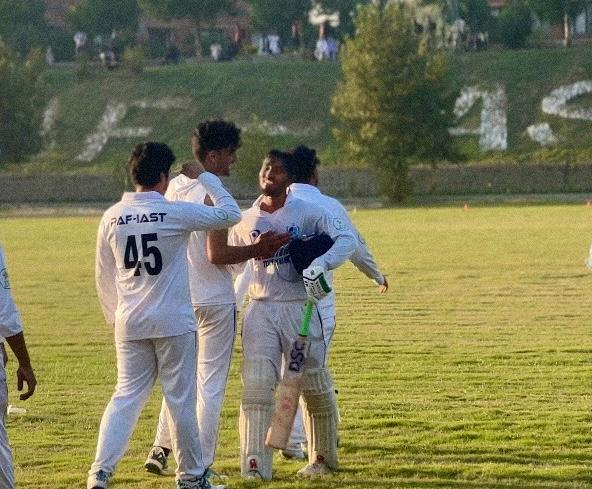

Wickets, Runs, and Dreams: My Experience at the HEC Intervarsity Tournament
By Abdhur Rahman Nasir | October 7, 2025
As a final-year computer science student at PAF-IAST, I've always balanced my passion for coding with my love for cricket. When the opportunity arose to represent my university at the Higher Education Commission (HEC) Intervarsity Cricket Tournament, I jumped at it. This wasn't just a game; it was a journey filled with teamwork, challenges, and unforgettable moments that taught me lessons beyond the pitch.
The tournament, held across various zones in Pakistan, brought together talented teams from universities nationwide. Our team from PAF-IAST trained rigorously for weeks, honing our skills under the guidance of experienced coaches. The excitement was palpable as we traveled to the venue, ready to compete against some of the best young cricketers in the country.

Our first match was intense. Facing off against a strong opponent, I remember the thrill of taking a crucial wicket that turned the game in our favor. The crowd's cheers, the team's high-fives – it was electric. We advanced through the rounds, each game testing our resilience. One highlight was our semi-final where we chased down a challenging target, thanks to a brilliant partnership between our openers.
Beyond the runs and wickets, the tournament fostered camaraderie. Sharing stories with players from different backgrounds, I learned about diverse cultures within Pakistan. It reminded me how sports can bridge gaps, much like technology connects people in my field of study.

Although we didn't win the championship, finishing as runners-up was a proud achievement. The experience boosted my confidence and time-management skills, essential for my software development career. It also inspired me to integrate AI into sports analytics, perhaps developing apps for performance tracking in cricket.
Looking back, the HEC Intervarsity Tournament was more than a competition; it was a dream realized. To aspiring student-athletes: embrace such opportunities. They shape you in ways classrooms can't. Wickets and runs may define the scoreboard, but the dreams and friendships last a lifetime.